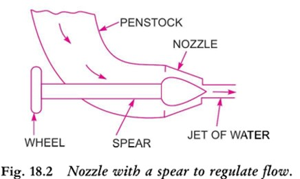

La rueda Pelton o turbina Pelton es una turbina de impulso de flujo tangencial. El agua golpea el cubo a lo largo de la tangente del corredor. La energía disponible a la entrada de la turbina es únicamente energía cinética. La presión a la entrada y salida de la turbina es la atmosférica. Esta turbina se usa para cabezas altas y lleva el nombre de L.A. Pelton, un ingeniero estadounidense. La Fig. 18.1 muestra el esquema de una central hidroeléctrica en la que la turbina es de rueda Pelton. El agua del embalse discurre por las compuertas a cuya salida se coloca una boquilla. La boquilla aumenta la energía cinética del agua que circula por la compuerta. A la salida de la boquilla, el agua sale en forma de chorro y golpea las cubetas (paletas) del rodete. Las partes principales de la turbina Pelton son
1. Boquilla y disposición de regulación de flujo (lanza).
2. Runner y baldes.
3. Carcasa.
4. Chorro de rotura.
1. Dispositivo de regulación de flujo y boquilla. La cantidad de agua que golpea los cubos (paletas) del corredor se controla colocando una lanza en la boquilla, como se muestra en la Fig. 18.2. La lanza es una aguja cónica que se acciona mediante un volante manual o automáticamente en dirección axial, según el tamaño de la unidad. Cuando la lanza se empuja hacia adelante en la boquilla, se reduce la cantidad de agua que golpea el corredor. Por otro lado, si la lanza se empuja hacia atrás, la cantidad de agua que golpea al corredor aumenta.

2. Corredor con Baldes. La figura 18.3 muestra el corredor de una rueda Pelton. Consiste en un disco circular en la periferia del cual se fijan varios cubos espaciados uniformemente. La forma de los cubos es de copa o cuenco semiesférico doble. Cada cubo está dividido en dos partes simétricas por una pared divisoria que se conoce como divisor.
El chorro de agua incide sobre el divisor. El divisor divide el chorro en dos partes iguales y el chorro sale por el borde exterior de la cubeta. Los cangilones tienen una forma tal que el chorro se desvía entre 1600 y 1700. Los cangilones están hechos de hierro fundido, acero fundido, bronce o acero inoxidable, según el cabezal en la entrada de la turbina.
3. Carcasa. La figura 18.4 muestra una turbina Pelton con carcasa. La función de la carcasa es evitar que el agua salpique y descargar agua en la pista de cola. También actúa como protección contra accidentes. Está hecho de hierro fundido o placas de acero fabricadas. La carcasa de la rueda Pelton no realiza ninguna. Está hecha de hierro fundido o placas de acero fabricadas. La carcasa de la rueda Pelton no realiza ninguna función hidráulica.
4. Chorro de ruptura. Cuando la boquilla se cierra completamente moviendo la lanza hacia adelante, la cantidad de agua que golpea el corredor se reduce a cero. Pero el corredor debido a la inercia sigue girando durante mucho tiempo. Para detener el rodete en poco tiempo, se proporciona una pequeña boquilla que dirige el chorro de agua en la parte posterior de las paletas. Este chorro de agua se llama chorro rompedor.